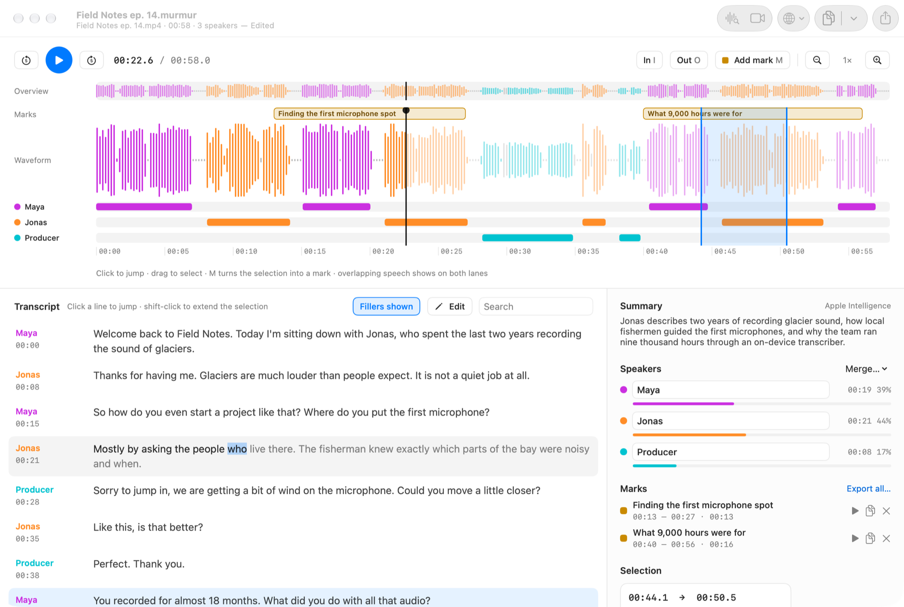
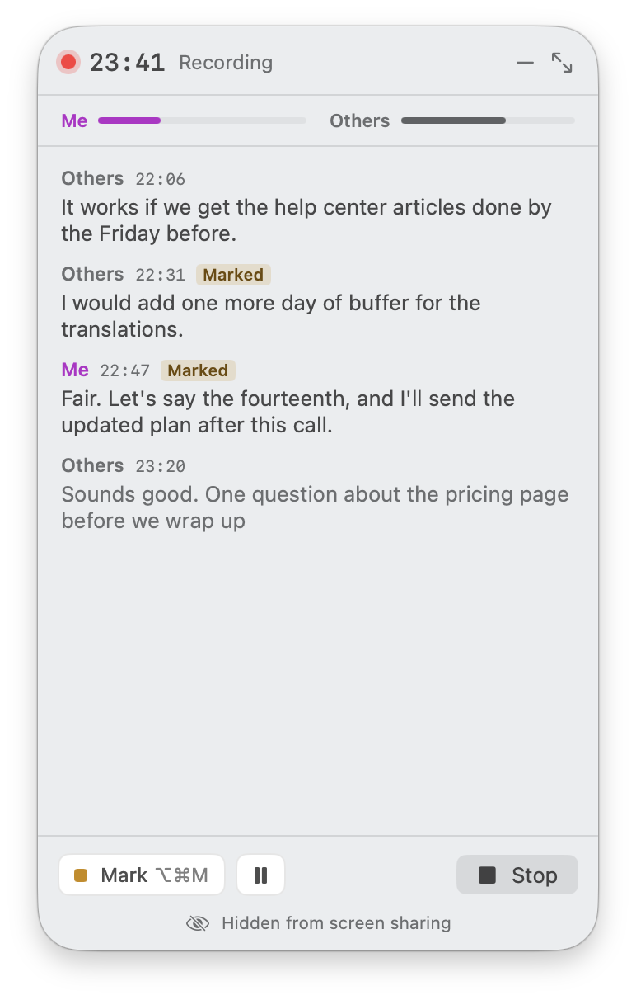

Speakers, sorted
Murmur finds who spoke when, keeps overlapping speech, and shows talk time per person. Name them once; rename, merge or reassign a paragraph when it guesses wrong.
Free and open source · macOS 26 · Apple silicon
Murmur transcribes audio, video and meetings on your Mac, tells the speakers apart and lays everything out on a timeline you can scrub, mark and export. Nothing leaves your Mac.
Latest release on GitHub · about 4 MB, plus a one-time 515 MB model download

Voices get their own colour on the waveform and their own lane underneath. Play, and the transcript follows word by word. Click anywhere to jump.
Murmur finds who spoke when, keeps overlapping speech, and shows talk time per person. Name them once; rename, merge or reassign a paragraph when it guesses wrong.
Drag across the waveform or press I and O, then M to keep a named mark. Copy or export one mark or all of them; cuts always land on whole words.
Type over a misheard word. Murmur lines your edit up with the audio and re-times it, so highlights and cuts stay exact. Everything is undoable.
Plain text, text with timestamps, Markdown, SRT, WebVTT and word-level JSON. Or cut audio and video clips: one file per mark, or all of them joined.
25 languages out of the box, checked twice: once from the sound, once from the words. Anything else can go to Apple's on-device transcriber.
Fillers like um and uh are found and hidden from exports. Optional enhancement cleans up noisy rooms. Apple Intelligence names each project and writes a summary.
Meeting recorder
Start a recording and Murmur captures two tracks: your microphone as Me and the sound of your call app as Others. A compact window floats over the call with a live transcript, a few seconds behind.

Private by design
Every step happens on device, with small specialised models instead of one big one. No account, no upload, no subscription.
Speech models by Desert Ant Labs; Voz is based on NVIDIA Parakeet TDT 0.6B v3. Loading a model sends an anonymous usage count to Desert Ant Labs for licensing; audio never does.
macOS 26 or later on an Apple silicon Mac. Intel Macs aren't supported because the speech models need the Neural Engine.
Anything macOS plays: mp3, m4a, aac, wav, aiff, flac, caf, mp4, m4v and mov. Video files keep their picture in a panel next to the transcript.
Bulgarian, Croatian, Czech, Danish, Dutch, English, Estonian, Finnish, French, German, Greek, Hungarian, Italian, Latvian, Lithuanian, Maltese, Polish, Portuguese, Romanian, Russian, Slovak, Slovenian, Spanish, Swedish and Ukrainian. For others, Murmur offers Apple's on-device transcriber.
Each project is a .murmur file you can keep anywhere, in ~/Documents/Murmur by default. It points to your original media instead of copying it, and finds the file again if you move it.
Early releases aren't notarized yet. Right-click Murmur in Applications and choose Open the first time, or build it yourself from source.
brew install xcodegen, clone the repository and run make run. The README has the details.